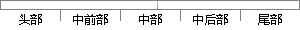

本系统采用B/S结构开发，即Browser/Server（浏览器/服务端）结构，是一种伴随着互联网技术的发展而兴起的一种结构。
片段位置图

相似结果|
相似片段 1：2．4．1B／s结构B／S(Browse“server)结构即我们通常称之为浏览器／服务器的结构模式。伴随着互联网技术的发展与兴起，它是一种对C／S结构的一种改进或者说一种变化了的结构嘲。基于这种模式，用户
相似片段 2：的迅速普及，传统的 C/S软件程序体系结构正在向分布式的网络化应用程序结构发展，在此情形下，B/S软件程序体系结构应运而生[33]。B/S 软件程序体系结构就是浏览器/服务器(Browser/Server)结构，它是伴随着互联网的兴起而产生的一种新技术，是对传统的 C/S 结构的程序的改进。
相似片段 3：其次，B/S结构，也就是浏览器/服务器结构，是互联网技术兴起后，在 C/S结构基础上的一种改进或变化。采用 B/S结构，用户界面能够直接用过浏览器实现，服务器端对全部事物逻辑进行处理。该结构主要是
相似片段 4：开发。2．5B／s架构B／S技术架构是服务器与浏览器的一种结构，这是当前程序开发时被广泛采用的程序开发框架。它是随着互联网技术发展起来的一种新程序结构，是对以往的C／S的架构改进的成果。在B／S程序框
相似片段 5：事务逻辑，该结构如图2．1所示。因此，B／S结构是伴随着Internet兴起而发展的一种新的分布式的应用服务结构。B／S结构能够减轻对客户端的数据负荷，同时减轻技术人员的维护任务量，降低公司成本【13】。c／S结构采用二次性到位的开发，所以相对C／S结构更加容易开发，成本也比较低廉。
相似片段 6：采用浏览器服务器架构。2．2．2模式特点B／S模式的应用程序能够减轻应用服务器的数据运行负荷是其重要优势。B／S结构是伴随着因特网的兴起，对C／S结构的一种改进。从本质上说，作为一种三层模式结构，它是在原有的二层模式结构的基础上进一步发展而来的。
|
※ 片段修改建议 ※
近似词参考：- 采用：采取 接纳 采纳
- 结构：布局 构造
- 开发：开辟
- 结构：布局 构造
- 技术：手艺 技能
- 发展：成长 生长
- 兴起：鼓起
- 结构：布局 构造
系统自动生成语句：本系统采取B/S布局开辟，即Browser/Server（浏览器/服务端）布局，是一种伴随着互联网手艺的成长而鼓起的一种布局。
注：本片段修改建议为系统自动生成，仅供参考。